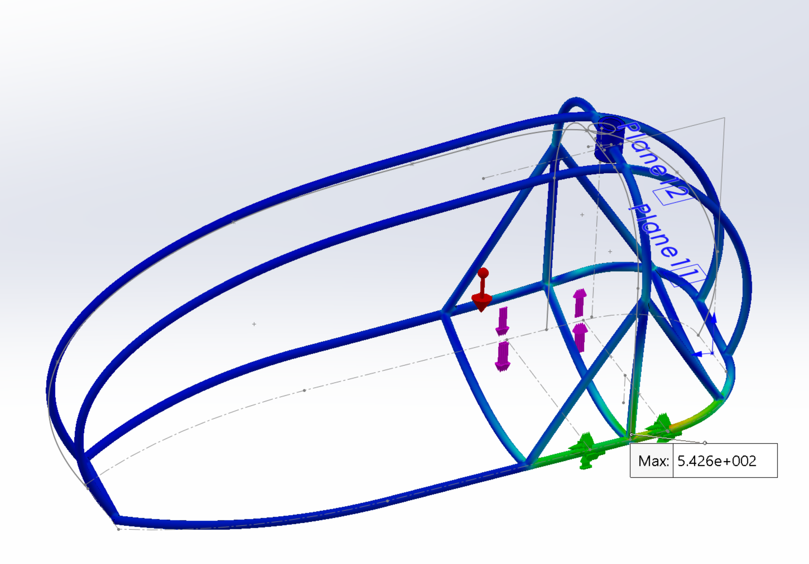
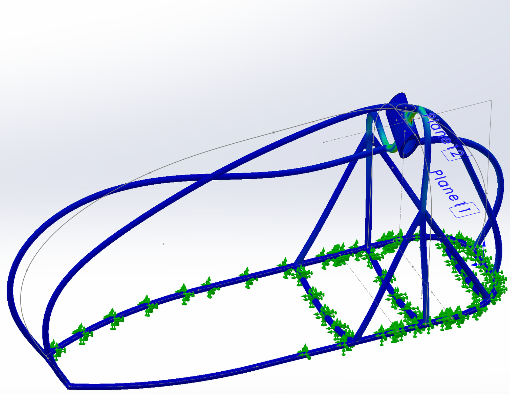
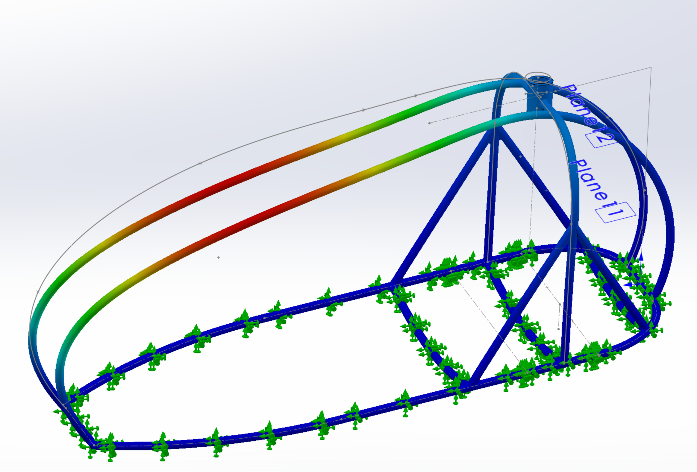
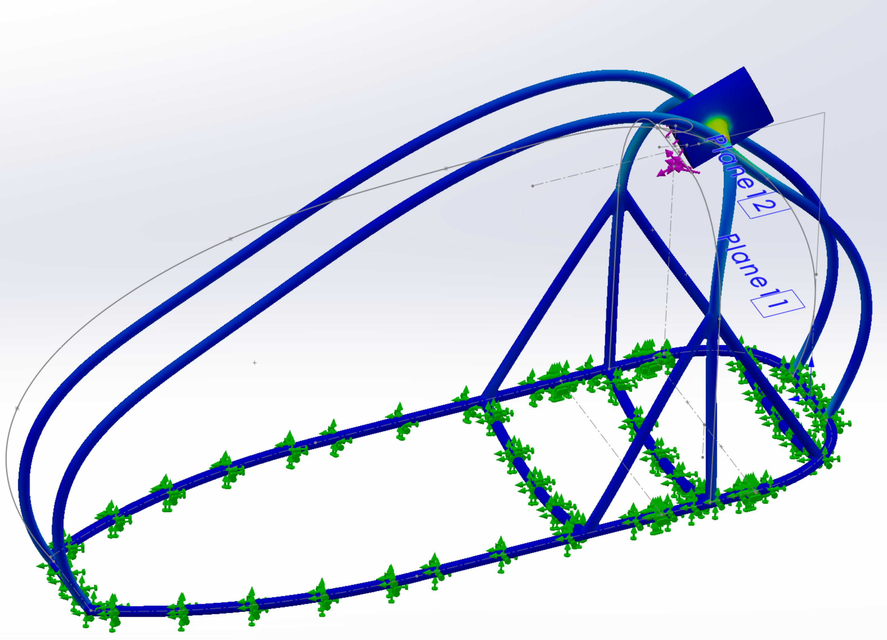
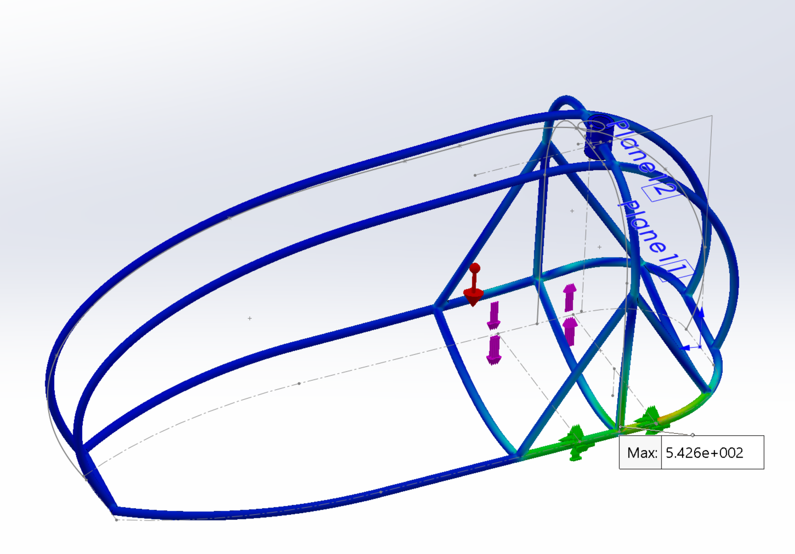
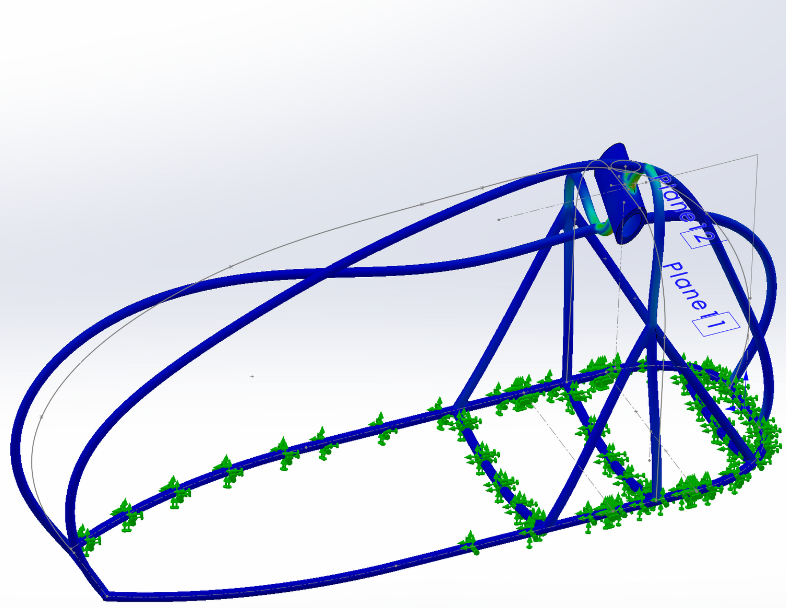
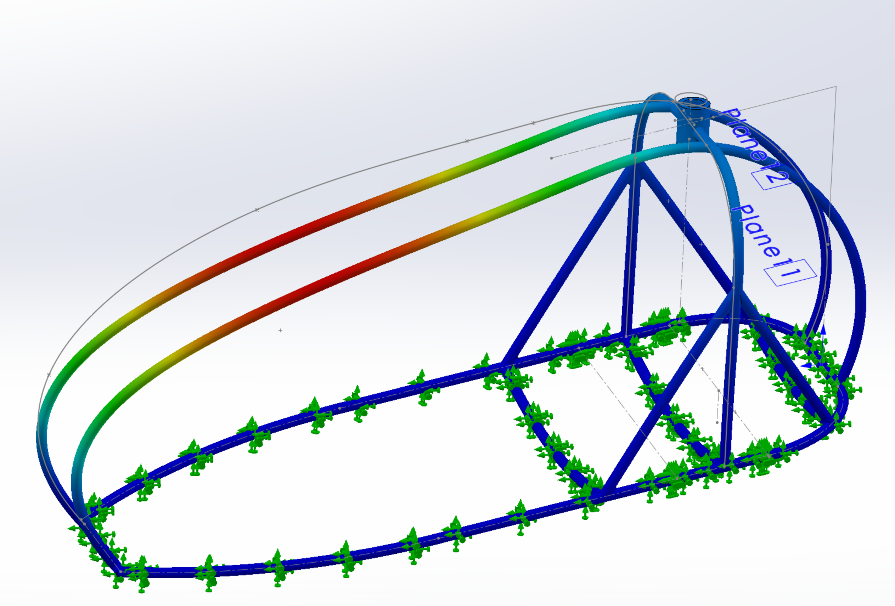
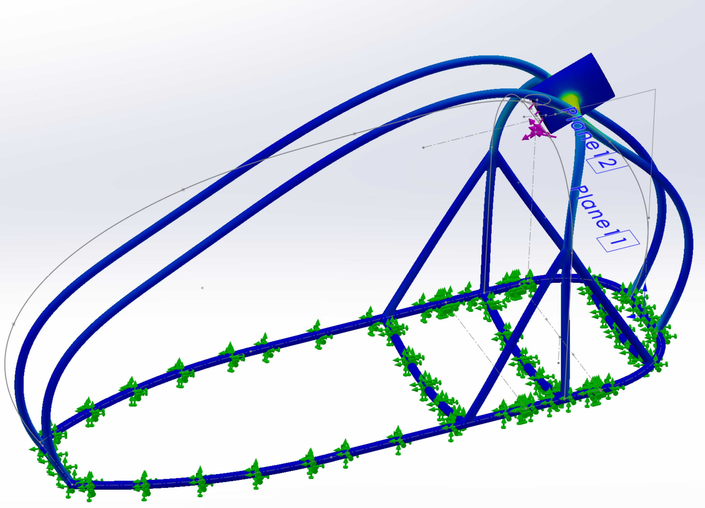

Project: FEA-Based Chassis Design for the PAL-V Flying Car
This project supported a second-year module on Finite Element Analysis (FEA) by integrating FEA into the design of a chassis for the PAL-V flying car. The design process aimed to meet specific requirements, including a fundamental frequency above 50 Hz, the ability to support static landing forces, and durability to withstand 10 years of cyclic moments caused by the rotation of the vehicle’s blades.
I developed and analyzed multiple design iterations, alongside my team, to identify the most promising design. The selected chassis underwent detailed FEA, focusing on mesh refinement and convergence in high-stress regions. This process highlighted the importance of addressing stress concentrations in complex or angular geometries, which could lead to localized failures. Sanity checks and close inspection of the FEA outputs revealed occasional exaggerations caused by issues like high aspect ratio elements, emphasizing the need for careful evaluation of simulation results.
Simulation outputs demonstrated the chassis's performance under static landing loads and cyclic moments about various axes. Alternative designs, while often more complex, frequently exhibited worse performance due to stress concentrations near abrupt geometric changes. This project showcased the application of FEA in optimizing structural designs to meet rigorous performance and durability criteria.
Topics: Finite Element Analysis, Structural Design, Stress Concentration, Mesh Refinement, Dynamic Loads, Cyclic Loading